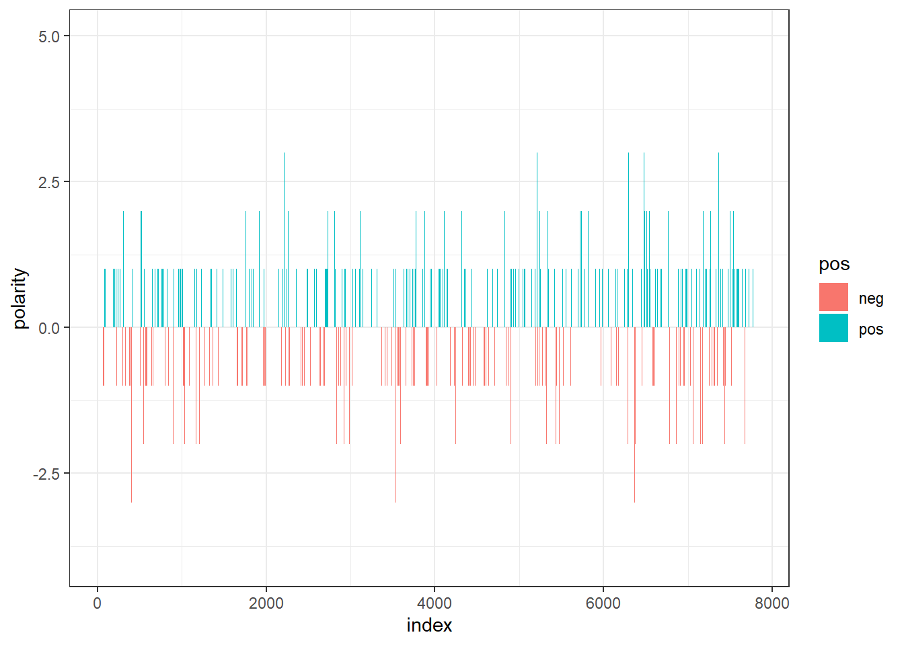
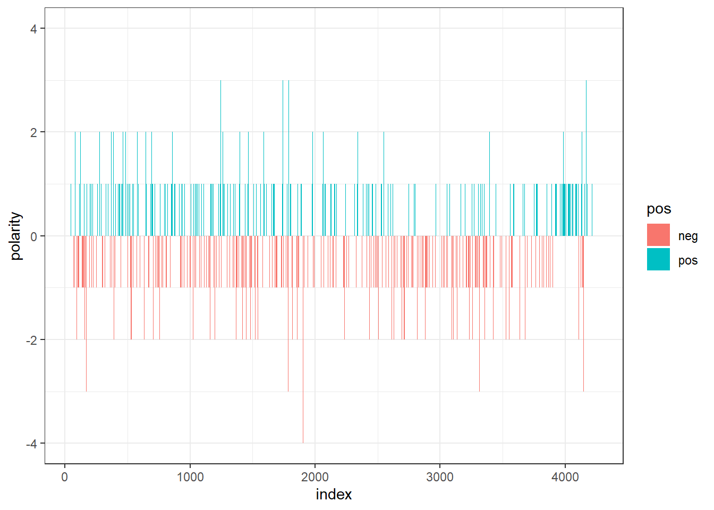

2 Text Analysis of Novels


Figure 2.1: Novels used in analysis
Although I like reading books, unfortunately I don’t find much time to read. However, I found that NLP is giving an opportunity to learn more about novels without reading it. My idea here is to try to learn as much as possible about two novels, The Aspern Papers and Awakening.
2.1 Data
Downloading Novels ‘The Awakening’ and ‘The Aspern Papers’
awakening <- scan("http://www.gutenberg.org/files/160/160-0.txt", what="character", blank.lines.skip = TRUE, sep="\n")
aspern <- scan("http://www.gutenberg.org/files/211/211-0.txt", what="character", blank.lines.skip = TRUE, sep="\n")
awakening<- iconv(awakening, 'utf-8', 'ascii', sub='')
aspern<- iconv(aspern, 'utf-8', 'ascii', sub='')2.2 Text cleaning
Cleaning headers of the two novels.
# Awakening: cleaning headers
awakening.begin <- which(awakening=="THE AWAKENING")[2]
awakening.end <- which(awakening=="*****") - 1
awakening.v<- awakening[awakening.begin:awakening.end]# Aspern: cleaning headers
aspern.begin <- which(aspern=="Macmillan and Co., 1888.")+1
aspern.end <- which(aspern=="End of the Project Gutenberg EBook of The Aspern Papers, by Henry James") - 1
aspern.v <- aspern[aspern.begin:aspern.end]
head(aspern.v)## [1] "I"
## [2] "I had taken Mrs. Prest into my confidence; in truth without her I"
## [3] "should have made but little advance, for the fruitful idea in the whole"
## [4] "business dropped from her friendly lips. It was she who invented the"
## [5] "short cut, who severed the Gordian knot. It is not supposed to be the"
## [6] "nature of women to rise as a general thing to the largest and most"2.3 Awakening
Cutting in chapters and corpus creation:
# Cutting the Awakening in chapters
awakening.v <- gsub("^I*(X|V)*I*$", "@@@", awakening.v)
awakening.string <- paste(awakening.v, collapse = " ")
awakening.chapters <- strsplit(awakening.string, "@@@ ")
# Cutting the Aspern in chapters
aspern.v <- gsub("^I*(X|V)*I*$", "@@@", aspern.v)
aspern.string <- paste(aspern.v, collapse = " ")
aspern.chapters <- strsplit(aspern.string, "@@@ ") # Awakening corpus creation
awakening.df <- as.data.frame(awakening.chapters, stringsAsFactors = FALSE)
awakening.df <-awakening.df[2:38,1]
awakening.df <- as.data.frame(awakening.df)
colnames(awakening.df) <- "chapters"
awakening.docs <- Corpus(VectorSource(awakening.df$chapters))
# Aspern corpus creation
aspern.df <- as.data.frame(aspern.chapters, stringsAsFactors = FALSE)
aspern.df <-aspern.df[2:38,1]
aspern.df <- as.data.frame(aspern.df)
colnames(aspern.df) <- "chapters"
aspern.docs <- Corpus(VectorSource(aspern.df$chapters))Text pre-processing: removing unnecessary simbols and signs, converting letters to lower case, removing numbers, punctuation and white space.
# Awakening: Text pre-processing
toSpace <- content_transformer(function (x , pattern ) gsub(pattern, " ", x))
awakening.docs <- tm_map(awakening.docs, toSpace, "/")
awakening.docs <- tm_map(awakening.docs, toSpace, "@")
awakening.docs <- tm_map(awakening.docs, toSpace, "\\|")
awakening.docs <- tm_map(awakening.docs, content_transformer(tolower))
awakening.docs <- tm_map(awakening.docs, removeNumbers)
awakening.docs <- tm_map(awakening.docs, removeWords, stopwords("english"))
awakening.docs <- tm_map(awakening.docs, removePunctuation)
awakening.docs <- tm_map(awakening.docs, stripWhitespace)
# Aspern: Text pre-processing
toSpace <- content_transformer(function (x , pattern ) gsub(pattern, " ", x))
aspern.docs <- tm_map(aspern.docs, toSpace, "/")
aspern.docs <- tm_map(aspern.docs, toSpace, "@")
aspern.docs <- tm_map(aspern.docs, toSpace, "\\|")
aspern.docs <- tm_map(aspern.docs, content_transformer(tolower))
aspern.docs <- tm_map(aspern.docs, removeNumbers)
aspern.docs <- tm_map(aspern.docs, removeWords, stopwords("english"))
aspern.docs <- tm_map(aspern.docs, removePunctuation)
aspern.docs <- tm_map(aspern.docs, stripWhitespace)Creation of a WordCloud:
# Awakening: Wordcloud
awakening.dtm <- DocumentTermMatrix(awakening.docs, control=list(weighting=weightTf))
awakening.m <- as.matrix(t(awakening.dtm))
awakening_v <- sort(rowSums(awakening.m),decreasing=TRUE)
awakening.d <- data.frame(word = names(awakening_v),freq=awakening_v)
set.seed(1234)
wordcloud(words = awakening.d$word, freq = awakening.d$freq, min.freq = 1,
max.words=200, random.order=FALSE, rot.per=0.35,
colors=brewer.pal(8, "Dark2"))
# Aspern: Wordcloud
aspern.dtm <- DocumentTermMatrix(aspern.docs, control=list(weighting=weightTf))
aspern.m <- as.matrix(t(aspern.dtm))
aspern_v <- sort(rowSums(aspern.m),decreasing=TRUE)
aspern.d <- data.frame(word = names(aspern_v),freq=aspern_v)
set.seed(1234)
par(mar = rep(0, 4))
wordcloud(words = aspern.d$word, freq = aspern.d$freq, min.freq = 1,
max.words=200, random.order=FALSE, rot.per=0.35,
colors=brewer.pal(8, "Dark2"))
2.4 Commonality cloud and Comparison cloud
Creation of a corpus out of the both texts:
Text pre-processing of the new corpus:
toSpace <- content_transformer(function (x , pattern ) gsub(pattern, " ", x))
cc.docs <- tm_map(cc.docs, toSpace, "/")
cc.docs <- tm_map(cc.docs, toSpace, "@")
cc.docs <- tm_map(cc.docs, toSpace, "\\|")
cc.docs <- tm_map(cc.docs, content_transformer(tolower))
cc.docs <- tm_map(cc.docs, removeNumbers)
cc.docs <- tm_map(cc.docs, removeWords, stopwords("english"))
cc.docs <- tm_map(cc.docs, removePunctuation)
cc.docs <- tm_map(cc.docs, stripWhitespace)Comparison and Commonality cloud:
cc.dtm <- DocumentTermMatrix(cc.docs)
cc.m <- as.matrix(t(cc.dtm))
colnames(cc.m)<- c("Awakening","Aspern")
#Comparison cloud
par(mar = rep(0, 4))
comparison.cloud(cc.m,max.words = 100,min.frrandom.order=FALSE)
# Commonality cloud
par(mar = rep(0, 4))
commonality.cloud(cc.m,max.words = 100,colors = "steelblue1",min.frrandom.order=FALSE)
2.5 Sentiment timeline
Loading in relevant lexicons:
library(tidytext)
library(dplyr)
library(tidyr)
library(plotly)
library(ggthemes)
library(sentimentr)
library(syuzhet)
data("sentiments")
afinn <- get_sentiments("afinn")
bing <- get_sentiments("bing")
loughran <- get_sentiments("loughran")
nrc <- get_sentiment_dictionary('nrc', language = "english")Polarity timeline of Awakening:
sent.awakening <- readLines("http://www.gutenberg.org/files/160/160-0.txt")
sent.awakening <-iconv(sent.awakening, 'utf-8', 'ascii', sub='')
awakening.corpus <- VCorpus(VectorSource(sent.awakening))
awakening.corpus <- tm_map(awakening.corpus, content_transformer(tolower))
awakening.corpus <- tm_map(awakening.corpus, removeNumbers)
awakening.corpus <- tm_map(awakening.corpus, removeWords, stopwords("english"))
awakening.corpus <- tm_map(awakening.corpus, removePunctuation)
awakening.corpus <- tm_map(awakening.corpus, stripWhitespace)
awakening.dtm <- DocumentTermMatrix(awakening.corpus)
awakening.tidy <- tidy(awakening.dtm)
awakening.tidy$count <-as.numeric(awakening.tidy$count)
colnames(awakening.tidy)[2]<- 'word'
awakening.tidy$document <- as.numeric(awakening.tidy$document)
nrc.joy <- subset(nrc, nrc$sentiment=="joy")
joy.words <- inner_join(awakening.tidy, nrc.joy)
joy.words <- count(joy.words, word)
bing <- get_sentiments("bing")
awakening.sentiment <- inner_join(awakening.tidy, bing)
awakening.sentiment <- count(awakening.sentiment, sentiment, index=document)
awakening.sentiment <- spread(awakening.sentiment, sentiment, n, fill=0)
awakening.sentiment$polarity <- awakening.sentiment$positive - awakening.sentiment$negative
awakening.sentiment$pos <- ifelse(awakening.sentiment$polarity >=0, "pos", "neg")
ggplot(awakening.sentiment, aes(x=index, y=polarity, fill=pos))+geom_bar(stat="identity", position="identity", width=1)
awakening.smooth <- ggplot(awakening.sentiment, aes(index, polarity))
(p2<-awakening.smooth + stat_smooth())
Polarity timeline of Aspern:
sent.aspern <- readLines("http://www.gutenberg.org/files/211/211-0.txt")
aspern.corpus <- VCorpus(VectorSource(sent.aspern))
aspern.corpus <- tm_map(aspern.corpus, content_transformer(tolower))
aspern.corpus <- tm_map(aspern.corpus, removeNumbers)
aspern.corpus <- tm_map(aspern.corpus, removeWords, stopwords("english"))
aspern.corpus <- tm_map(aspern.corpus, removePunctuation)
aspern.corpus <- tm_map(aspern.corpus, stripWhitespace)
sent.aspern <-iconv(sent.aspern, 'utf-8', 'ascii', sub='')
aspern.dtm <- DocumentTermMatrix(aspern.corpus)
aspern.tidy <- tidy(aspern.dtm)
aspern.tidy$count <-as.numeric(aspern.tidy$count)
colnames(aspern.tidy)[2]<- 'word'
aspern.tidy$document <- as.numeric(aspern.tidy$document)
nrc.joy <- subset(nrc, nrc$sentiment=="joy")
joy.words <- inner_join(aspern.tidy, nrc.joy)
joy.words <- count(joy.words, word)
#bing <- subset(sentiments, sentiments$lexicon=='bing')[,-4]
aspern.sentiment <- inner_join(aspern.tidy, bing)
aspern.sentiment <- count(aspern.sentiment, sentiment, index=document)
aspern.sentiment <- spread(aspern.sentiment, sentiment, n, fill=0)
aspern.sentiment$polarity <- aspern.sentiment$positive - aspern.sentiment$negative
aspern.sentiment$pos <- ifelse(aspern.sentiment$polarity >=0, "pos", "neg")
ggplot(aspern.sentiment, aes(x=index, y=polarity, fill=pos))+geom_bar(stat="identity", position="identity", width=1)

g2 <- ggplotGrob(p2)
g3 <- ggplotGrob(p3)
g <- rbind(g2, g3, size = "first")
g$widths <- unit.pmax(g2$widths, g3$widths)
grid.newpage()
grid.draw(g)
2.6 Topic Modelling: LDA
Pick up 5 topics and try to make sense of the topics giving a label to them.
# Awakening
top.mod.awakening.dtm <- DocumentTermMatrix(awakening.corpus, control = list(weighting=weightTf))
burnin = 1000
iter = 1000
keep = 50
set.seed(510)
top.mod.awakening.n <- nrow(top.mod.awakening.dtm)
top.mod.awakening.dtm <- top.mod.awakening.dtm[row_sums(top.mod.awakening.dtm > 0) > 1,]
top.mod.awakening.lda_basic.model<- LDA(top.mod.awakening.dtm, k = 5L, method = "Gibbs",
control = list(burnin = burnin, iter = iter, keep = keep, alpha = 1) )
top.mod.awakening.lda.topics <- as.matrix(topics(top.mod.awakening.lda_basic.model))
#top.mod.awakening.lda.topics
top.mod.awakening.lda.terms <- as.matrix(terms(top.mod.awakening.lda_basic.model, 10))
top.mod.awakening.lda.terms<- iconv(top.mod.awakening.lda.terms, 'utf-8', 'ascii', sub='')
#top.mod.awakening.lda.terms
awakening.top10termsPerTopic <- terms(top.mod.awakening.lda_basic.model, 10)
awakening.top10termsPerTopic <- iconv(top.mod.awakening.lda.terms, 'utf-8', 'ascii', sub='')
#awakening.top10termsPerTopic
colnames(awakening.top10termsPerTopic)<-c("Edna in her house/room"," Work, life and love - Leaving the papers after he/she died","Madame Edna - Mademoiselle Ratignolle - Robert","Emotions - Description of a face ","Mrs.Pontellier - Edna - Robert")
awakening.top10termsPerTopic## Edna in her house/room
## [1,] "one"
## [2,] "like"
## [3,] "never"
## [4,] "thought"
## [5,] "day"
## [6,] "might"
## [7,] "seemed"
## [8,] "children"
## [9,] "two"
## [10,] "felt"
## Work, life and love - Leaving the papers after he/she died
## [1,] "project"
## [2,] "work"
## [3,] "must"
## [4,] "gutenbergtm"
## [5,] "without"
## [6,] "new"
## [7,] "found"
## [8,] "many"
## [9,] "feeling"
## [10,] "full"
## Madame Edna - Mademoiselle Ratignolle - Robert
## [1,] "upon"
## [2,] "eyes"
## [3,] "face"
## [4,] "hand"
## [5,] "looked"
## [6,] "sat"
## [7,] "white"
## [8,] "night"
## [9,] "table"
## [10,] "took"
## Emotions - Description of a face Mrs.Pontellier - Edna - Robert
## [1,] "little" "pontellier"
## [2,] "madame" "mrs"
## [3,] "went" "said"
## [4,] "away" "edna"
## [5,] "old" "will"
## [6,] "edna" "know"
## [7,] "back" "time"
## [8,] "house" "come"
## [9,] "ratignolle" "good"
## [10,] "robert" "mademoiselle"awakening.topicNames <- apply(awakening.top10termsPerTopic, 2, paste, collapse=" ")
#awakening.topicNames# Aspern
top.mod.aspern.dtm <- DocumentTermMatrix(aspern.corpus, control = list(weighting=weightTf))
burnin = 1000
iter = 1000
keep = 50
set.seed(510)
top.mod.aspern.n <- nrow(top.mod.aspern.dtm)
top.mod.aspern.dtm <- top.mod.aspern.dtm[row_sums(top.mod.aspern.dtm > 0) > 1,]
top.mod.aspern.lda_basic.model<- LDA(top.mod.aspern.dtm, k = 5L, method = "Gibbs",
control = list(burnin = burnin, iter = iter, keep = keep, alpha = 1) )
top.mod.aspern.lda.topics <- as.matrix(topics(top.mod.aspern.lda_basic.model))
#top.mod.aspern.lda.topics
top.mod.aspern.lda.terms <- as.matrix(terms(top.mod.aspern.lda_basic.model, 10))
top.mod.aspern.lda.terms<- iconv(top.mod.aspern.lda.terms, 'utf-8', 'ascii', sub='')
#top.mod.aspern.lda.terms
aspern.top10termsPerTopic <- terms(top.mod.aspern.lda_basic.model, 10)
aspern.top10termsPerTopic <- iconv(top.mod.aspern.lda.terms, 'utf-8', 'ascii', sub='')
#aspern.top10termsPerTopic
colnames(aspern.top10termsPerTopic)<-c("Home - Seeing somebody - description of eyes - leaving","Jeffrey","Tita","Aunt","Time - Woman - Venice")
aspern.top10termsPerTopic## Home - Seeing somebody - description of eyes - leaving Jeffrey
## [1,] "went" "project"
## [2,] "came" "gutenbergtm"
## [3,] "house" "work"
## [4,] "back" "papers"
## [5,] "face" "may"
## [6,] "looked" "almost"
## [7,] "took" "works"
## [8,] "away" "electronic"
## [9,] "look" "jeffrey"
## [10,] "put" "aspern"
## Tita Aunt Time - Woman - Venice
## [1,] "" "might" "old"
## [2,] "miss" "come" "one"
## [3,] "" "little" "made"
## [4,] "tita" "way" "never"
## [5,] "said" "aunt" "time"
## [6,] "know" "even" "long"
## [7,] "dont" "take" "great"
## [8,] "think" "make" "still"
## [9,] "oh" "idea" "woman"
## [10,] "bordereau" "told" "upon"2.7 Main points of interpretation
The most common words are names of characters such as Edna, Tita and Mrs.Pontellier.
According to the sentiment analysis, Awakening novel is slightly from the beginning to the end. On the other hand, Aspern has a slight drop in the negative sentiment, but the end is positive.
Awakening is as twice as longer text than Aspern.
Due to lemmatization could not address the time of speaking (wheater it is told in past or future)
Words “said”,little“,”think“,”house“,”good“,”like“,”one“,”come“,”back“,”thought" are the most common.